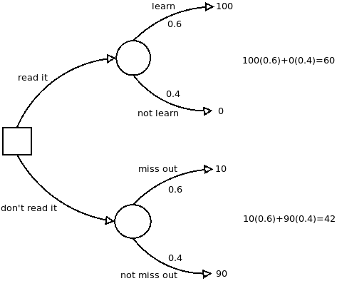

Now that we know, from the previous post, how to translate back and forth between our degrees of confidence and subjective probabilities, we can learn a new tool that, unlike the linear model or the weighted pro-con list, takes into account the uncertainty of the outcomes of our actions.
Before continuing, it's important to say that we'll often be considering simple versions of our models, because it's easier to explain how to use them if we keep it simple. But once you know how to use them, you can add sophistication in all sorts of ways. For example, the three factor linear model can have more than three factors; the tree we're about to describe can get very complicated indeed if that's what it takes to faithfully describe the situation that you're in!
Now, then, say we're trying to consider whether to read that new book everyone is talking about. After all, reading it has an opportunity cost: Time you spend reading it is time that you could have spent doing something else, something perhaps more valuable to you.
The decision tree for whether to read the book is shown below; here is how it's constructed: The square on the left hand side is called a "choice point"; the branches leading from it (sometimes called "levers") are the different things you could choose to do. In this example there are two branches, "read it" and "don't read it", but in general there could be any number of branches depending on how many options you're considering.

The circles represent points past which things are not under your control anymore: If you read the book, then you will either have learned something valuable or not (according to this model, though see below), each with a certain probability. Suppose you suspect that the book contains something valuable that you don't already know, maybe because a friend recommended it to you.
Suspecting that you would learn something is in the neighborhood of 0.6; so we label the "learn" branch with that probability. The probabilities on all the branches leading from a given circle have to sum to 1 (because one of those things has to happen); so the probability on the "not learn" branch is 0.4.
We have been assuming that only two branches lead from each of the circles to keep things simple, but they can be any number depending on the number of different outcomes we're considering. For example, we could have made three branches, one for "learn something of great value", one for "learn something moderately useful", and one for "learn nothing useful". Again, whatever numbers we put for the probabilities of these outcomes, they would all need to sum to 1.
The lower circle also has two possible outcomes: You didn't read it and missed out on something important, or you didn't read it and didn't miss out on anything. If the probability of learning something useful from the book is 0.6, it makes sense that the probability of missing out if you don't read it would be the same, 0.6, but the probabilities on the lower part of the tree don't always have to be the same as on the upper part. It just turns out that way for this example.
The last ingredients are the numbers at the ends of the branches. These are called "utilities" or "personal values", and they represent how good or how bad each outcome would be, with the worst outcome getting 0 and the best getting 100.
The worst outcome is spending the time to read the book and getting nothing out of it, so that branch gets 0. The best outcome, let's say, is reading the book and learning something valuable from it (the value of the thing you learned being much greater than the opportunity cost you incurred reading). This outcome gets 100.
Not reading it and missing out on what the book has to teach you is bad, but not as bad as reading it and getting nothing would be, so that branch gets a 10. This number you get by asking your gut how bad it would be on a scale from 0 to 100. Again consulting our guts, suppose we decide that not reading the book and not missing out on anything should get a 90. (It's not as good as if we had read it and learned something!)
After the tree is constructed, we calculate "expected utilities" for each choice as shown on the right hand side: For each branch leading from the choice point, multiply the probability times the personal value and add it all up. The choice that has the highest expected utility wins, in this case the "read it" branch.